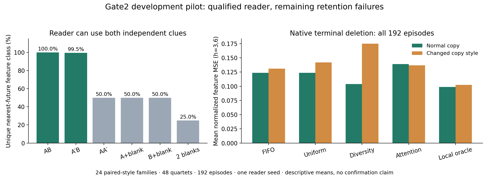
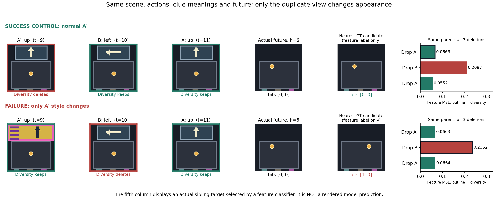

Gate2 把两个独立方向分别藏在历史 cue 中：一个决定左右，一个决定上下。K=2 足以各留一条；候选有三张，其中两张讲的是同一个方向。A 与 A′ 是重复信息，B 是另一条独有信息。角色 A 不固定代表横向。

普通副本时，diversity 保住两条不同信息的比例为 96/96；改变副本外观后降到 48/96。对应特征分类从 96/96 降到 72/96。注意：这 48 次信息丢失全部集中在重复的是纵向 cue的48条 episode；重复横向 cue 的48条没有该失败。这是明确但很窄的受控现象，不能概括成所有外观变化都会击败 diversity。
这对样本的真实答案都是“向左、向上”。三张 cue 的时间依次是 t=9、10、11；query 为15。上下文、动作、cue 含义与未来完全相同，只有第一张 A′ 从普通样式换成彩色大卡片。绿框表示 diversity 保留，红框表示删除。

普通样式下，diversity 删除一张重复的“向上”，保住“向左＋向上”；改样式后，它保住外观差别大的两张“向上”，反而删除唯一的“向左”。这对样本的 MSE 从 0.066324 变为 0.235177；同一候选集合里另删一张重复 cue，MSE 可以回到 0.066324。
Attention 的表现正好提醒我们不能据单例选赢家：它在普通样式中删 B、MSE 0.209666；改样式后删 A′、MSE 0.066324。两类 proxy 在不同外观下会犯不同错误。
普通样式的 diversity 虽然保住两条互补信息、分类也正确，仍不是精确 MSE 最优：保存较早或较晚的同内容副本，reader 的数值输出会有差别。因此要把“丢了独有信息”和“语义正确但读出误差略有不同”分开。
不能只看失败视频。下面保留这组所有四个 sibling：如果 B 被删掉，左右不同的两个样本会向 reader 提供相同剩余信息。归档预测核查显示，两个 y 分组内删除 B 后的预测逐元素完全相同，最大差异都是0；猜对其中一个并不表示恢复了丢失的方向。
| 真实 bits（x,y） | 样式 | diversity 保留的信息 | 最近未来类别 | MSE | 局部 oracle MSE |
|---|---|---|---|---|---|
| (0, 0) | 普通副本 | 互补两条 | [0, 0] | 0.066324 | 0.055182 |
| (0, 0) | 改外观副本 | 重复同一条 | [1, 0] | 0.235177 | 0.066324 |
| (0, 1) | 普通副本 | 互补两条 | [0, 1] | 0.068424 | 0.064794 |
| (0, 1) | 改外观副本 | 重复同一条 | [0, 1] | 0.169574 | 0.068424 |
| (1, 0) | 普通副本 | 互补两条 | [1, 0] | 0.084419 | 0.077194 |
| (1, 0) | 改外观副本 | 重复同一条 | [1, 0] | 0.186644 | 0.084419 |
| (1, 1) | 普通副本 | 互补两条 | [1, 1] | 0.067955 | 0.046910 |
| (1, 1) | 改外观副本 | 重复同一条 | [0, 1] | 0.197601 | 0.051304 |
它支持“视觉差异最大”与“信息互补”不等价：有限槽位可能被同一事实的不同外观占据。它也支持在这个固定 reader、固定终端候选集合中存在实际预测损失，而不仅是 cue 标签被删。它尚未证明我们的 scorer 能学会解决，更没有证明这个任务覆盖真实视频的困难。
另外，早期 q−6 的静止预测仍不可靠：MSE 为 0.342578，复用上一帧的因果参照是0。当前证据限定在 query 时的终端选择，不能顺势宣称整个 early-time reader 或长轨迹标签已经校准。
按明确失败类型筛出 24/96 个配对 episode（12 个 family），再按 family ID、bits 字典序选第一组；没有按最大损失或最大 regret 选。完整总体为24个配对style family、48个quartet、192条episode，一个训练seed。该图册只重绘归档观测和计算结果，未调用模型。
Family：0c7aa4c661fd4f3952f48311。选择规则、具体ID、距离、attention、源文件哈希。数据来自 A100 Gate2 开发 pilot；数值属于新任务自己的归一化特征空间，不与旧 Gate 的 MSE 绝对值横向比较。